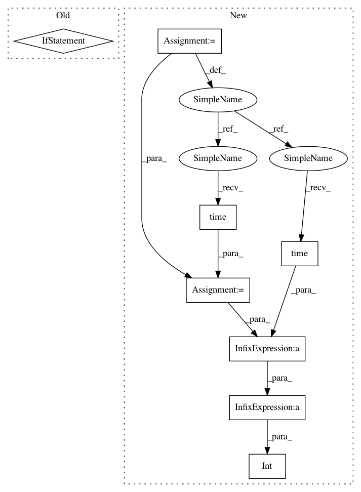

a43bba5127d2539e2a3741e2f20247012f5dd746,pyprob/model.py,Model,_prior_traces,#Model#Any#Any#Any#,37
Before Change
def _prior_traces(self, samples=10, trace_state=TraceState.RECORD, proposal_network=None, *args, **kwargs):
generator = self._prior_trace_generator(trace_state, proposal_network, *args, **kwargs)
return [next(generator) for i in range(samples)]
def prior_sample(self, *args, **kwargs):
generator = self._prior_sample_generator(*args, **kwargs)
After Change
def _prior_traces(self, samples=10, trace_state=TraceState.RECORD, proposal_network=None, *args, **kwargs):
generator = self._prior_trace_generator(trace_state, proposal_network, *args, **kwargs)
ret = []
time_start = time.time()
for i in range(samples):
print(" \r{} | {} / {} | {:,} traces/s".format(util.progress_bar(i+1, samples), i+1, samples, int(i / (time.time() - time_start))), end="\r")
ret.append(next(generator))
return ret
In pattern: SUPERPATTERN
Frequency: 3
Non-data size: 8
Instances
Project Name: pyprob/pyprob
Commit Name: a43bba5127d2539e2a3741e2f20247012f5dd746
Time: 2018-03-05
Author: atilimgunes.baydin@gmail.com
File Name: pyprob/model.py
Class Name: Model
Method Name: _prior_traces
Project Name: ChrisCummins/clgen
Commit Name: 1b13cb710528bc7ebfaf7e402cdc2c1090f0afe5
Time: 2018-06-05
Author: chrisc.101@gmail.com
File Name: deeplearning/clgen/models/tensorflow_backend.py
Class Name: TensorFlowModel
Method Name: _LockedTrain
Project Name: pyprob/pyprob
Commit Name: a43bba5127d2539e2a3741e2f20247012f5dd746
Time: 2018-03-05
Author: atilimgunes.baydin@gmail.com
File Name: pyprob/model.py
Class Name: Model
Method Name: prior_distribution
Project Name: pyprob/pyprob
Commit Name: a43bba5127d2539e2a3741e2f20247012f5dd746
Time: 2018-03-05
Author: atilimgunes.baydin@gmail.com
File Name: pyprob/model.py
Class Name: Model
Method Name: _prior_traces